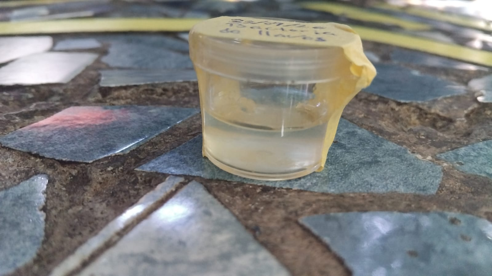
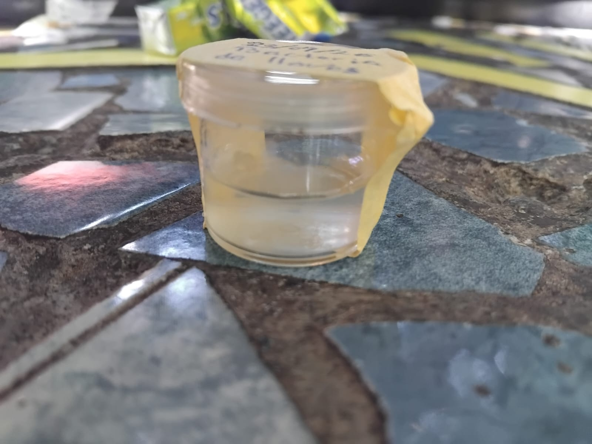
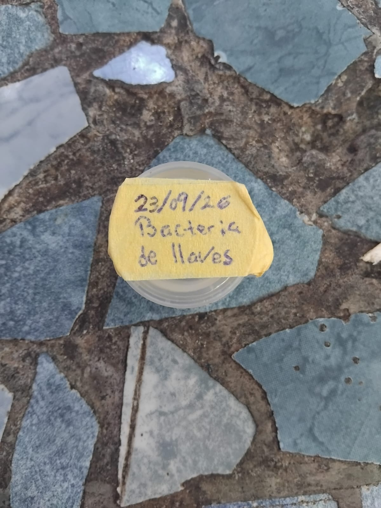

Cultivo artesanal de bacterias a partir de una muestra de llaves: fundamentos, proceso y evidencia.
La biotecnología microbiana utiliza el metabolismo de microorganismos en la medicina, industria y ambiente. Para estudiarlos, aislarlos y aprovecharlos, el primer paso indispensable es el cultivo.
Es el proceso controlado de propagar microorganismos en el laboratorio, garantizándoles condiciones ambientales (temperatura, pH, oxígeno) y nutrientes asimilables.
El peso seco microbiano exige Carbono, Hidrógeno, Nitrógeno, Oxígeno, Fósforo y Azufre (CHNOPS) para sintetizar proteínas, ácidos nucleicos y ATP energético.
Se requieren cationes como K+, Na+, Mg2+, Ca2+ y Fe para facilitar la catálisis de enzimas y mantener el gradiente electroquímico de la membrana celular.
En microbiología existen dos métodos principales de propagación: caldos líquidos y medios sólidos de agar. Cada uno cumple una función microbiológica irreemplazable:
Al no tener gelificante, las bacterias nadan libremente y absorben nutrientes sin barreras. Ideal para producir biomasa masiva en poco tiempo.
El gel inmoviliza cada célula en un punto fijo. Al dividirse, genera una colonia pura visible, permitiendo separar especies de mezclas complejas.
Su vidrio o plástico transparente permite estudiar colonias sin abrir la caja, y probar qué antibióticos inhiben a las bacterias patógenas.
El extracto de caldo no es sazón: aporta peptonas (proteínas digeridas ricas en nitrógeno) y minerales (Na+, K+, Mg2+) indispensables para sintetizar macromoléculas y ATP celular.
Disolvimos a fuego lento 2–3 min sin grumos. Pasamos los recipientes por agua hirviendo y vertimos una fina película de 3 a 5 mm, tapando de inmediato.
Elegimos unas llaves de uso cotidiano: están expuestas a bolsillos, dinero, mesas y contacto manual continuo, convirtiéndose en un portador ideal de microbios del entorno.
Usamos hisopos estériles de poliéster. Es fundamental evitar el algodón común, ya que desprende ácidos grasos libres que inhiben e intoxican el crecimiento bacteriano.
Abrimos la placa lo mínimo para no dejar entrar esporas del aire y deslizamos el hisopo en zigzag suave sobre el ágar para dispersar células individuales sin romper el gel.
Colocamos la caja sellada en un espacio cálido y sin luz solar directa. El rango térmico activa la cinética enzimática acelerando la división celular bacteriana.
Al calentarse, el medio evapora humedad. Si estuviera al derecho, las gotas gotearían sobre el ágar y desparramarían las bacterias en una sopa indistinguible.
Entre las 24 y 72 horas comenzaron a brotar puntos redondeados: cada célula individual logró duplicarse hasta formar una colonia macroscópica visible.
Coco Gram positivo habitante normal de la piel humana y manos. Al manipular llaves se transfiere formando colonias circulares, lisas y blanquecinas en el ágar.
Bacilo Gram positivo común en polvo y suciedad ambiental. Produce endosporas ultrarresistentes que sobreviven en el metal y crecen rápido con nutrientes.
Moho pluricelular con hifas aéreas. Colonias aterciopeladas de color verdoso o azulado que liberan esporas al aire (el moho que coloniza cajas abiertas).
Levadura biotecnológica (pan, cerveza). Crece como colonias cremosas y abombadas; fermenta azúcares para obtener energía metabólica.
Robert Koch intentaba cultivar bacterias en rodajas de papa y gelatina animal, pero a 37 °C se derretía o las bacterias se la comían. Fannie Hesse (esposa de su asistente) sugirió el agar-agar de algas rojas que usaba para mermeladas: hierve a 100 °C y cuaja a 40 °C.
Los manuales de microbiología clínica (ASM) prohíben hisopos de algodón común: liberan ácidos grasos libres que inhiben e intoxican a bacterias sensibles. Por eso se exige poliéster, dacrón o nailon inerte.
Cada punto en la placa es una UFC (Unidad Formadora de Colonia). Empezó con una única célula invisible duplicándose por fisión binaria cada 20 min: ¡en 48 h ese punto alberga cientos de millones de clones agrupados!
Un fómite es un objeto inerte transmisor de patógenos. Aunque metales como el cobre y latón poseen un efecto oligodinámico natural (sus iones rompen membranas bacterianas), la grasa dérmica, sudor y polvo acumulados en las llaves forman un escudo orgánico protector que neutraliza el metal, permitiendo a Staphylococcus y bacilos sobrevivir intactos.
Alexander Fleming descubrió el primer antibiótico de la humanidad por un descuido idéntico al de abrir una placa: se fue de vacaciones y dejó una caja de Petri mal cerrada. Al regresar, un moho contaminante (Penicillium notatum) había caído del aire y mataba a todas las bacterias a su alrededor. ¡La contaminación accidental transformó la medicina!

Resultado final · muestra 23/09/26La caja de las llaves, etiquetada con fecha 23/09/26: el medio casero mantuvo su firmeza y, tras incubar, proliferaron colonias circulares bien definidas sobre las líneas del hisopado.

Sellada y etiquetada

La placa, vista de arriba
Las colonias crecieron sobre las líneas de estría, confirmando la viabilidad nutritiva de nuestro medio artesanal.
Con materiales cotidianos reprodujimos con éxito los principios fundamentales de la microbiología. Cultivar microorganismos es el primer paso indispensable para estudiarlos, identificarlos y diagnosticar enfermedades.
Agua, peptonas de caldo y gelificante aportaron carbono, nitrógeno y sales asimilables suficientes para sustentar el ciclo celular microbiano.
El hisopo de poliéster, la desinfección térmica y la incubación invertida fueron la clave para aislar colonias y evitar contaminaciones.
Comprender el cultivo microbiano es la base de la biotecnología moderna: antibiogramas médicos, desarrollo de vacunas e industria alimentaria.